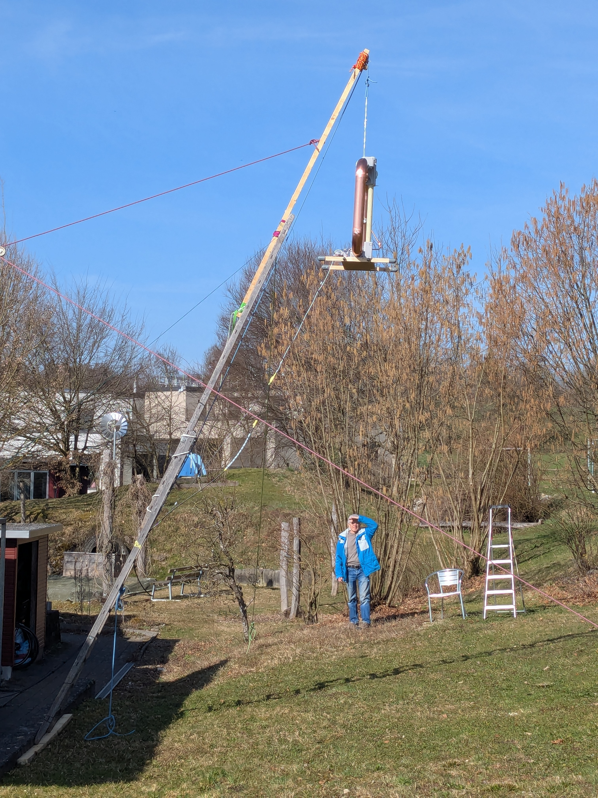
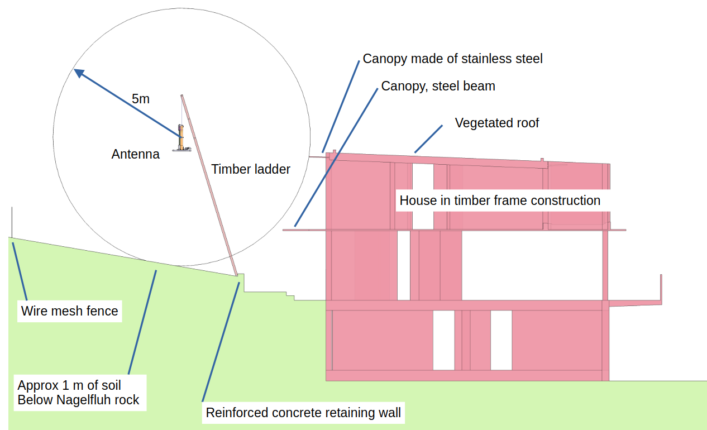

Info: Homebrew rectangular loop made of thick copper tubing with vacuum capacitors, 10 m to 160 m.
Conductor: Copper tube 100mm
Capacitor: Vacuum Capacitor
Environment: Suspended 5 m above ground next to the house.
| Band | 80m | 60m | 40m | 30m | 20m | 15m | 12m | 10m | |
| Frequency f | MHz | 3.573 | 5.357 | 7.074 | 10.136 | 14.074 | 21.074 | 24.915 | 28.074 |
| C/λ | 1 | 0.04 | 0.06 | 0.07 | 0.11 | 0.15 | 0.22 | 0.26 | 0.30 |
| Calculation accuracy | accurate | accurate | accurate | moderate | moderate | reduced | reduced | reduced | |
| Intrinsic bandwidth Bint | kHz | 2.4 | 5.5 | 6.7 | 9.3 | 12.1 | 66.0 | 201.0 | 350.0 |
| Source of Bint | SWR = 2.62 | ||||||||
| Loop diameter D | m | 1.006 | |||||||
| Conductor diameter d | m | 0.100 | |||||||
| Loop count n | 1 | 1 | |||||||
| Inductance L | H | 1.51e-06 | |||||||
| Capacitance C | pF | 1314 | 585 | 335 | 163 | 84.7 | 37.8 | 27 | 21.3 |
| Unloaded Q0 | 1 | 1489 | 974 | 1056 | 1090 | 1163 | 319 | 124 | 80 |
| Damping resistance RT | Ohm | 0.0228 | 0.0522 | 0.0636 | 0.0882 | 0.115 | 0.626 | 1.907 | 3.321 |
| Radiation resistance RR | Ohm | 0.000398 | 0.00201 | 0.00613 | 0.0259 | 0.0968 | 0.493 | 0.973 | 1.583 |
| Loss resistance RLoss | Ohm | 0.0224 | 0.0502 | 0.0574 | 0.0623 | 0.0180 | 0.133 | 0.934 | 1.738 |
| Power to antenna Pfwd | W | 100 | 100 | 100 | 100 | 100 | 100 | 100 | 100 |
| swr_min_ant | 1 | 1.00 | 1.00 | 1.00 | 1.00 | 1.00 | 1.00 | 1.00 | 1.00 |
| etaSWR_ant | % | 100 | 100 | 100 | 100 | 100 | 100 | 100 | 100 |
| Power antenna load Pload | W | 100 | 100 | 100 | 100 | 100 | 100 | 100 | 100 |
| Antenna efficiency η | % | 1.75 | 3.86 | 9.64 | 29.4 | 84.3 | 78.8 | 51.0 | 47.7 |
| Loop current I rms | A | 66.27 | 43.78 | 39.66 | 33.66 | 29.51 | 12.64 | 7.24 | 5.49 |
| Loop voltage Uloop rms | V | 2247 | 2225 | 2662 | 3238 | 3941 | 2527 | 1712 | 1462 |
| Magnetic dipole moment m | A m² | 52.705 | 34.816 | 31.544 | 26.774 | 23.473 | 10.050 | 5.759 | 4.364 |
| Link to calculator | calculator | calculator | calculator | calculator | calculator | calculator | calculator | calculator | |

A wooden ladder was secured to the house with ropes. At the top of the ladder, a pulley redirects the rope used to raise the antenna. At maximum elevation, the antenna is 5 m above ground and maintains at least 5 m distance from other metallic objects. The ladder itself only has small metal parts and screws.

A detailed description is available here: https://arxiv.org/abs/2607.10828
Overview of all Antennas with filter/selection: compare page
Overview of all Antennas static: static compare page
2026 Peter Märki (HB9ISP). This project is created in my free time and has no commercial background. Provided without warranty of any kind. Feedback is welcome.